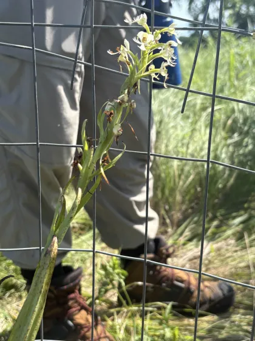
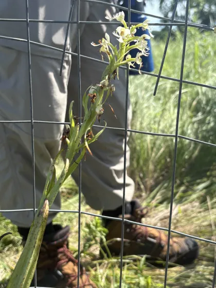

Hello! I am a Chicago native and an Environmental and Sustainability studies and illustration double major at Columbia College Chicago. I've been immersed in the Chicago art scene from a young age and thus very tied with my community. I am fascinated by the natural world and adopt much of its aesthetics into my artwork. Currently, I am practicing and studying to become a scientific illustrator one day. I aim to blend the worlds of art and science through my artwork as a means of making education accessible. I strongly believe that education through art will lead us to a more sustainable future. Feel free to say hi! I love meeting new people and hearing about their passions.
Eloise Park | Instagram | Email

 



Jefferson Park Pollinator Group
As a chicago local, I often spend my time volunteering for community projects. One of my favorite projects was helping to plant a pollinator garden in Jefferson Park. I created several illustrations of the native plants and pollinators found in the garden to help educate visitors about the importance of biodiversity and conservation.

Rare species plant monitoring with Distance Sampling
As a volunteer scientist with the Chicago Botanic Garden's Plants of Concern program, I participated in population monitoring of Platanthera leucophaea (Prairie White Fringed Orchid), a federally threatened species. This conservation work required precise visual identification, attention to morphological detail, and accurate field documentation in Illinois prairie ecosystems.
Monitoring rare species through direct observation deepened my understanding of plant anatomy, seasonal variation, and habitat assessment. These skills directly inform my approach to botanical illustration and the importance of scientifically accurate visual communication in conservation efforts.
Environmental and Sustainability Studies
As an Environmental and Sustainability Studies major, I have had the opportunity to engage in various fieldwork and research projects. One notable experience was conducting a biodiversity survey in a local park, where I documented plant and animal species and analyzed their ecological roles. This hands-on experience has enriched my understanding of environmental issues and has influenced my artwork, which often highlights themes of conservation and sustainability.
Monitoring rare species through direct observation deepened my understanding of plant anatomy, seasonal variation, and habitat assessment. These skills directly inform my approach to botanical illustration and the importance of scientifically accurate visual communication in conservation efforts.